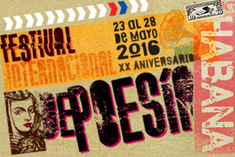

De la 23 à la 28 de mayo tendrá lugar la XX edición del Festival Internacional de Poesía de La Habana.
Un article de Madeleine Sautie.

Más poético que de costumbre se nos pinta este mayo al acoger desde el día 23 y hasta el 28 la XX edición del Festival Internacional de Poesía de La Habana (IFSP), que aun concebido para esta fecha despliega desde los primeros días del mes acciones que anuncian el sonado suceso en el que participarán poetas de todos los continentes del orbe.De esos albores de la Fiesta, que se dedica en esta ocasión a los estudiantes, nos da fe CubaPoesía Itinerante, un recorrido que desde el día 4 y hasta el 20 vienen llevando a vía de hecho, apoyados por las sedes provinciales de la Uneac y de las direcciones de Cultura, los poetas Soleida Ríos, Jamila Medina, Pierre Bernet y Karel Leyva, para entrar en contacto con otros bardos de Guantánamo, Santiago de Cuba, Granma, Las Tunas, Holguin, Camagüey, Ciego de Ávila, Sancti Spíritus, Villa Clara, Matanzas, Pinar el Río, Île de la jeunesse, Mayabeque y Artemisa.
Una ofrenda floral colocada en la Fragua Martiana al poeta mayor que es José Martí dará inicio a la primera jornada del evento, que sigue ese mismo día 23 con el Encuentro Mundial de Poetas en Defensa de la Humanidad, en el Hotel Tryp Habana Libre, donde tendrán su espacio el panel Poesía y acción ciudadana, las intervenciones de varios poetas, entre ellos la de Alex Pausides, coordinador general del Festival, y de Antonio Guerrero, así como una lectura de poemas para homenajear a Fidel en su 90 cumpleaños. También la ocasión será propicia para escuchar en un recital de textos y canciones al cantante puertorriqueño Danny Rivera, Augusto Blanca, Pepe Ordaz, Corina Mestre y Waldo Leyva.
La Casa de la Poesía, ubicada en el centro histórico de la ciudad, será la sede del 18 Encuentro Internacional Abrace, de Montevideo, que organiza el proyecto internacional homónimo y agrupa a escritores latinoamericanos para realizar lecturas, conferencias y talleres en torno a la literatura y las dinámicas promocionales de los autores de la región.
La sala Villena de la Uneac se abre el martes 24 al Laboratorio de escrituras, para ofrecer un homenaje al poeta nicaragüense Rubén Darío, a cargo del catedrático español Álvaro Salvador y las respectivas conferencias Connotación de la imagen en la poesía contemporánea y Las estructuras clásicas en la poesía contemporánea, de Ricardo Alberto Pérez y Virgilio López Lemus.
Hasta las escuelas secundarias básicas Mártires de Humboldt 7 y Protesta de Baraguá se llegarán los participantes del Festival para sostener un encuentro poético con los estudiantes, en la acción que se ha hecho llamar Los poetas a la escuela, a la vez que tendrán lugar otros espacios en la Casa de la Poesía, en la Uneac, y en la Plaza de la Independencia de Pinar del Río.
Las 6 de la tarde del propio día 24, será la hora de la Velada Palabra del Mundo, espacio ya histórico dentro de las actividades del Festival, para el que se ofrece la Basílica de San Francisco de Asís, ocasión también para la entrega del Premio Rafael Alberti, que patrocina la Sociedad de Beneficencia de Andalucía.
Un mitin poético, que se repetirá en las siguientes jornadas, marcará las primeras horas del miércoles 25 en el Centro Cultural CubaPoesía, en la barriada de Cayo Hueso. Ese día los poetas llenarán de versos los institutos preuniversitarios Tomás David Royo y Saúl Delgado al llegarse hasta allí para intercambiar con los alumnos al tiempo que realizan sus lecturas.
Mientras que en la tarde, en la Casa del Alba cultural tendrá lugar el espectáculo Arcoíris de la poesía, algunos centros escolares del municipio de Diez de Octubre (escuela primaria Mariana Grajales; escuela primaria Edison; preuniversitario Francisco de Miranda) recibirán también a los poetas que más tarde protagonizarán una tertulia en el Patio de la Dirección Municipal de Cultura. La Plaza de Armas albergará una acción poética multidisciplinaria mientras en el centro CubaPoesía, tendrá lugar la iniciativa Un poema en cada casa.
Hasta el municipio mayabequense de San José de Las Lajas se llegará el FIPH para participar en el Encuentro Mujer y Poesía. También la escuela técnica profesional Luis Augusto Turcios Lima y la secundaria básica Carlos J. Finlay tendrán su toque lírico al recibir en sus predios a los poetas.
El laboratorio de Escrituras reserva para el jueves en la Unec el panel La promoción de la poesía en el nuevo milenio. Esperanzas y alternativas, moderado por la poeta Yanelis Encinosa. En el Laboratorio… disertará este día la intelectual española Pepa Merlo sobre Las escritoras de la Generación el 27. También tocará su turno a la reflexión en torno a la Historicidad de la mujer africana.
La poesía seguirá causando sus efectos en otros parajes capitalinos como la Unión Árabe de Cuba y la Casa de José Lezama Lima (lectures). Kcho Laboratorio de Arte y el Paseo del Prado cobijarán acciones poéticas comunitarias y por su parte Alamar abrigará la tertulia Horizonte de Nuestra América.
El festival cierra oficialmente sus puertas el 28, pero solo en apariencias, a juzgar por el convite a seguir leyendo y hablando de versos, que significa la visita comunitaria, ambientalista y de turismo histórico a la Sierra Maestra, que llevarán a cabo sus participantes para concluirla el 5. de junio con la inauguración del Festival al Sur está la Poesía, en el municipio granmense de Pilón.
He reproducido el artículo de la compañera Madeleine Sautié, en mi espacio del blog lamula.pe Liama, Pérou.
Câlins, Rosina Valcárcel